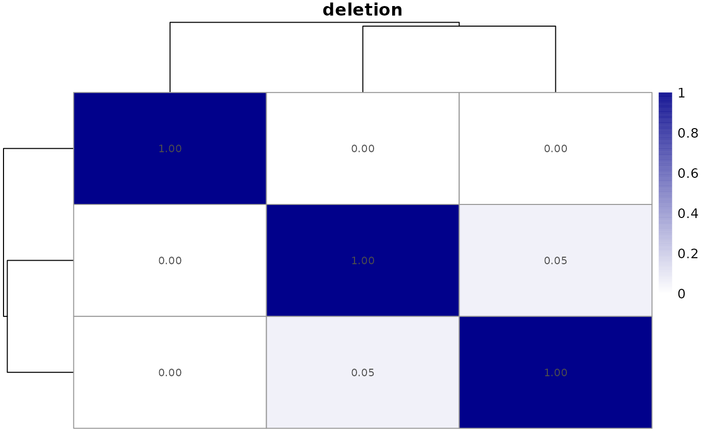

Plot one heatmap (or two heatmaps) of the metrics present in
a CNVMetric object. For the overlapping metrics, the user can select
to print the heatmap related to amplified or deleted regions or both. The
NA values present in the metric matrix are transformed into zero for
the creation of the heatmap.
a CNVMetric object containing the metrics calculated
by calculateOverlapMetric or by calculateLog2ratioMetric.
a single character string indicating which graph
to generate. This should be a type present in the CNVMetric object or
"ALL". This is useful for the
overlapping metrics that have multiple types specified by the user.
Default: "ALL".
a vector of 2 character string
representing the 2 colors that will be
assigned to the lowest (0) and highest value (1) in the heatmap.
Default: c("white", "darkblue").
a boolean specifying if column names are
be shown. Default: FALSE.
a boolean specifying if the plot should not be drawn.
Default: TRUE.
further arguments passed to
pheatmap::pheatmap() method. Beware that
the filename argument cannot be used when type is
"ALL".
a gtable object containing the heatmap(s) of the specified
metric(s).
The default method pheatmap::pheatmap().
## Load required package to generate the samples
require(GenomicRanges)
## Create a GRangesList object with 3 samples
## The stand of the regions doesn't affect the calculation of the metric
demo <- GRangesList()
demo[["sample01"]] <- GRanges(seqnames="chr1",
ranges=IRanges(start=c(1905048, 4554832, 31686841),
end=c(2004603, 4577608, 31695808)), strand="*",
state=c("AMPLIFICATION", "AMPLIFICATION", "DELETION"))
demo[["sample02"]] <- GRanges(seqnames="chr1",
ranges=IRanges(start=c(1995066, 31611222, 31690000),
end=c(2204505, 31689898, 31895666)), strand=c("-", "+", "+"),
state=c("AMPLIFICATION", "AMPLIFICATION", "DELETION"))
## The amplified region in sample03 is a subset of the amplified regions
## in sample01
demo[["sample03"]] <- GRanges(seqnames="chr1",
ranges=IRanges(start=c(1906069, 4558838),
end=c(1909505, 4570601)), strand="*",
state=c("AMPLIFICATION", "DELETION"))
## Calculating Sorensen metric
metric <- calculateOverlapMetric(demo, method="sorensen")
## Plot both amplification and deletion metrics
plotMetric(metric, type="ALL")
## Extra parameters, used by pheatmap(), can also be passed to the function
## Here, we have the metric values print to the cell while the
## row names and column names are removed
plotMetric(metric, type="DELETION", show_rownames=FALSE,
show_colnames=FALSE, main="deletion", display_numbers=TRUE,
number_format="%.2f")
